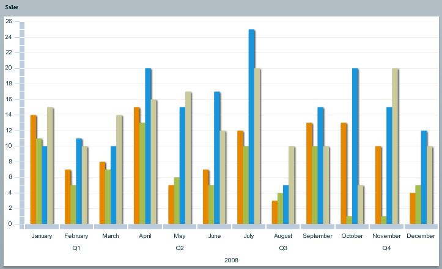

To create an OLAPChart component, you need to create an OLAP schema or cube that can be
used to query your flat data using the Adobe®
Flex®
OLAPCube object. For details, read about Creating an OLAP Schema in Advanced Data Grid Controls and Automation Tools>Creating OLAP Data Grids in the Flex Data Visualization Developer's
Guide.
The following code shows some simple flat data on products.
[ {
product : "Product 1",
quarter : "Q1",
month : "January",
year : "2008",
country : "France",
sales : 14
},
{
product : "Product 1",
quarter : "Q1",
month : "January",
year : "2008",
country : "US",
sales : 11
},
...
{
product : "Product 2",
quarter : "Q4",
month : "December",
year : "2008",
country : "US",
sales : 10
},
]
The following code is an example of an OLAP cube that
will allow you to query the summary data on products, namely the total
sales by product, time, and country. This code defines product, time,
and country as dimensions and sets the aggregator property of the OLAPMeasure object
to make use of the SUM aggregator.
<mx:OLAPCube name="Sales" dataProvider="{flatData}" id="cube">
<mx:OLAPDimension name="ProductDim">
<mx:OLAPAttribute name="Product" dataField="product"/>
<mx:OLAPHierarchy name="ProductHier" hasAll="true">
<mx:OLAPLevel attributeName="Product"/>
</mx:OLAPHierarchy>
</mx:OLAPDimension>
<mx:OLAPDimension name="TimeDim">
<mx:OLAPAttribute name="Year" dataField="year"/>
<mx:OLAPAttribute name="Quarter" dataField="quarter"/>
<mx:OLAPAttribute name="Month" dataField="month"/>
<mx:OLAPHierarchy name="TimeHier" hasAll="true">
<mx:OLAPLevel attributeName="Year"/>
<mx:OLAPLevel attributeName="Quarter"/>
<mx:OLAPLevel attributeName="Month"/>
</mx:OLAPHierarchy>
</mx:OLAPDimension>
<mx:OLAPDimension name="CountryDim">
<mx:OLAPAttribute name="Country" dataField="country"/>
<mx:OLAPHierarchy name="CountryHier" hasAll="true">
<mx:OLAPLevel attributeName="Country"/>
</mx:OLAPHierarchy>
</mx:OLAPDimension>
<mx:OLAPMeasure name="Sales" dataField="sales"
aggregator="SUM"/>
</mx:OLAPCube>
You can change the aggregator property of the measure to something other than SUM, for example, to the AVG aggregator to compute the average sales value instead.
Once your cube has been defined you need to write a query
to extract data from the cube. The following code shows the query
for the example cube.
private function getQuery(cube:IOLAPCube):IOLAPQuery {
var query:OLAPQuery = new OLAPQuery();
// on row axis, cluster by product and country dimensions
var rowQueryAxis:IOLAPQueryAxis = query.getAxis(OLAPQuery.ROW_AXIS);
var productSet:OLAPSet = new OLAPSet();
productSet.addElements(cube.findDimension("ProductDim").
findAttribute("Product").children);
var countrySet:OLAPSet = new OLAPSet();
countrySet.addElements(cube.findDimension("CountryDim").
findAttribute("Country").children);
rowQueryAxis.addSet(productSet.crossJoin(countrySet));
// on column axis, cluster, by Year, Quarter
var colQueryAxis:IOLAPQueryAxis = query.getAxis(OLAPQuery.COLUMN_AXIS);
var yearSet:OLAPSet = new OLAPSet();
yearSet.addElements(cube.findDimension("TimeDim").
findAttribute("Year").children);
var quarterSet:OLAPSet= new OLAPSet();
quarterSet.addElements(cube.findDimension("TimeDim").
findAttribute("Quarter").children);
colQueryAxis.addSet(yearSet.crossJoin(quarterSet));
return query;
}
You need to make sure the query is run after the cube
has been completed and that a showResult function is called. The following code shows how to specify a function
to execute the query and how to set up a result handler.
<mx:Script>
<![CDATA[
private function runQuery(event:Event):void {
var query:IOLAPQuery = getQuery(event.target as OLAPCube);
// Execute the query.
var token:AsyncToken = cube.execute(query);
// Set up handlers for the query results.
token.addResponder(new AsyncResponder(showResult, showFault));
}
]]>
</mx:Script>
<mx:OLAPCube name="salesCube" dataProvider="{flatData}" id="cube"
complete="runQuery(event);"/>
The following code shows how the showResult function sets the the OLAPChart data provider to the OLAPResult and how to create an OLAPChart object.
<mx:Script>
<![CDATA[
private function showResult(result:Object, token:Object):void {
if (!result) {
Alert.show("No results from query.");
return;
}
olapchart.dataProvider = result as IOLAPResult;
}
]]>
</mx:Script>
<ilog:OLAPChart width=”100%” height=”100%” id=”olapachart”/>
By default the OLAPChart object displays the entire result in a single ColumnChart using column series.

The first series (orange) corresponds to the “Product 1” sales in France, the second one (green)
corresponds to the “Product 1” sales in
the US, the third one (blue) corresponds to the “Product
2” sales in France and the last one to “Product 2” sales in the US. This is because the row
axis of the OLAP query is configured to be a cross-join of the products
and the countries.